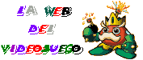
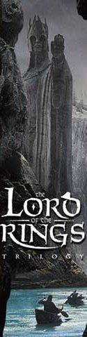
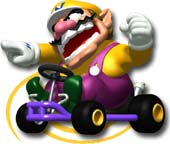
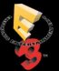
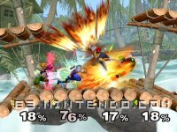
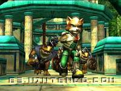
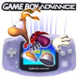

Las patentes de software sólo benefician a las grandes empresas. |
 |
|
|
|
Nintendo 64 Game Boy N. GAMECUBE Game Boy Advance |
|
|
|
Playstation Playstation 2 |
|
|
| Dreamcast |
|
Juegos de Moda |
|
Pokém. Snap(N64) RE Code Vero. (DC) S.Smash Bros (N64) Power Stone 2 (DC) Zelda:M.'s M. (N64) Phantasy S.O. (DC) F. Fantasy IX (PS) Sonic Adv. 2 (DC) Pokémon St. (N64) |
|
Otras Secciones |
|
Colaboraciones Actualizaciones Ant. Noticias Ant. Encuestas Ant. |
|
E-Mail |
Pronto en Videojuego

Pronto en Videojuego
| Bienvenid@ a La Web del Videojuego. |
Este es un sitio dedicado a los videojuegos y por tanto con el mismo objetivo: entretener. Esta hecha sólo por un chaval (nada de empresas y eso...) que se ve que tiene poca faena (la Universidad para él es poco...) y se pone a hacer páginas web (y luego suspende). Para informate sobre las noticias más interesantes y curiosas del sector, échale un vistazo a esta página de vez en cuando. Por mi parte, intentaré actualizarla lo antes posible, pero claro, yo tambien tengo cosas que hacer, y tampoco me pagan... (aprovecho por si alguien me quiere contratar, estoy abierto a cualquier oferta millonaria...) Las direcciones para acceder a esta página son:
http://videojuegos.come.to (con publicidad)
Se puede entrar a través de otras direcciones pero prefiero que guardeis en vuestros favoritos o accedais
con las de arriba porque como ésta es una pag. personal suele cambiar de servidor y con las direcciones de arriba
te redirigen directamente al nuevo servidor.
|
| |||
| Actualizaciones |
Pato Jaws, un internauta aficionado a esta web nos ha mandado un pequeño comentario con algunas características de uno de sus juegos preferidos de N64, Donkey Kong 64. Podeis acceder al comentario desde aquí.
Página poco actualizada. (14/11/01)
Estoy introduciéndome en otros lenguajes más complejos que el simple HTML normal, así que indefinidamente no actualizaré la web. Si alguien esta interesado en formar parte de la web aportando actualizaciones que me mande un email dicíendomelo.
Arreglado el problema de servidor. (28/7/01)
He podido entrar finalmente en el servidor y poder actualizar la pag. para los que entraban por las direcciones antiguas. A partir de ahora si entras por la antigua te redigirás a la buena (http://videojuegos.come.to). Recordad que las mejores direcciones para entrar son las de arriba, que sinó luego pasa lo que pasa.
Temas pendientes. (27/8/01)
Tengo pendiente, después de arreglar lo explicado abajo, poneos todas las noticias, imágenes y videos del Space World 2001 de Nintendo actualizar Los Más Vendidos para todos los paises y subir la review de Donkey Kong 64 con la aportación de Patricio. Esto lo haré después de los examenes de septiembre.
Problemas con el servidor (IMPORTANTE). (27/8/01)
He tenido problemas con el servidor que utilizaba antes, WorldOnLine. El problema es que no me dejaba entrar para poder actualizar la pag. y, por tanto, he decidido cambiar de servidor. El nuevo servidor es iespana.es y parece mucho más competente que el anterior. Pero hay un problema, como no puedo entrar a actualizar desde el anterior server, todos los que entren con la vieja dirección leo.worldonline.es/joerquep o gameon.wol.es/videojuegos NO VERÁN LAS NUEVAS ACTUALIZACIONES. ASÍ QUE BORRAD LAS DIRECCIONES ANTERIORES Y ENTRAD SIEMPRE CON LAS INDICADAS ARRIBA. En fin, he contactado con Tiscali-Worldonline a ver si finalmente puedo acceder y redirigir a los que entren hacia esta página.
Repaso de juegos de Playstation. (17/7/01)
He añadido a la lista de comentarios de Playstation a WWF Smackdown! 2 y Tony Hawk's Pro Skater 2, poco a poco pero voy haciendo :). Próximamente los de abajo de la lista de Playstation.
Nuevos juegos para Game Boy Advance. (13/7/01)
He comentado y puesto las últimas fotografias de algunos títulos de GBA: Silent Hill, Mario Advance, Castlevania: Circle of the Moon y Golden Sun. Próximamente F-Zero y Krazy Racers.
Actualización de Julio. (4/7/01)
Este mes me he portado bien, y traigo a la fecha que corresponde las listas de ventas del mes pasado para las 4 zonas habituales.
Actualización (tarde) de Junio. (19/6/01)
Lo siento por el retraso de mes, pero claro, los examenes, el Quake III... en fin. Aquí teneis las listas de ventas para el mes anterior, en Mayo.
Actualización de Mayo. (7/5/01)
Nuevas listas de ventas para el mes ya acabado de Abril. Nuestro top tambien se actualiza, podeis seguir mandando vuestros votos!.
Arreglo de algún error en Nestcape 6. (18/4/01)
He arreglado algún fallo en de la pag. principal, como el de las listas que se veian mal, y ahora con Nestcape 6 se ve igual que con el Internet Explorer, aunque no lo aseguro en todas las páginas.
Actualización del mes de abril. (18/4/01)
Más vale tarde que nunca. Todas las listas de ventas actualizadas y tambien el top.
| Actualizaciones anteriores |
| Noticias | Lista (4/7/01) |
|
Trailer del videojuego de ESDLA para Xbox. (22/8/01) El primer trailer de La Comunidad del Anillo, el primer videojuego de ESDLA por parte de Sierra para Xbox, ya esta en internet. Por cierto, en cuanto al Señor de los Anillos, Electronic Arts (EA) se hizo hace unas semanas con la licencia de las 3 peliculas de ESDLA de New Line Cinema y ya esta preparando su propia remesa de videojuegos. Hay que aclarar que Sierra tiene los derechos de Tolkien Enterprises (los libros) y EA de New Line Cinema (las películas), lo que son licencias diferentes técnicamente, pero realmente no es mucha la diferencia. Trailer de La Comunidad del Anillo para Xbox (QuickTime,7,5MB) Mario Kart confirmado para GameCube. (24/7/01)  Según parece se confirmó en el E3, pero no se mostró practicamente nada de nada. El juego más divertido de velocidad de la historia tendrá su correspondiente versión para la nueva consola de Nintendo, la GameCube. Estará listo para el 2002 en Japón y se espera que se desvelen más datos sobre este juego y otros en el próximo SpaceWorld que se celebra en agosto. Almenos ya está confirmado. El Señor de los Anillos en videojuego. (9/7/01) Hace tiempo que se conoce sobre la aparición en videojuego del mejor libro del siglo XX. Estoy hablando, ni más ni menos, de que la trilogía épica fantástica que dió origen al rol e inspiración a millones de personas, El Señor de los Anillos de J.R.R. Tolkien, que con la llegada de las próximas 3 películas de mano de NewLine Cinema basadas en los libros se prepara una avanlacha de Marketing y, claro está, en estos tiempos un videojuego es imprescindible, y más si se trata de El Señor de los Anillos, que cuenta con millones y millones de seguidores (entre los que me cuento yo mismo) en todo el planeta azul. No hay que olvidarse tampoco de la novela de El Hobbit de J.R.R. Tolkien, preludio del Señor de los Anillos y con un éxito tambien sin precedentes, que se rumorea que tambien se esta preparando una película sobre las aventuras de Bilbo Bolsón, aunque este proyecto esta aún muy verde. He ido recopilando datos sobre las noticias que han ido apareciendo y ahora mismo os doy un repaso de como esta el proyecto: La licencia de los videojuegos (El Hobbit y El Señor de los Anillos) la tiene la compañía Sierra de Vivendi Universal Publishing y el primer juego que espera estrenar será el de "La Comunidad del Anillo" (título del primer libro/película de los/las tres), que esta actualmente en desarrollo por Seattle-base WXP Inc, y la fecha prevista es principios del 2002 (la película se estrena mundialmente el 19 de Diciembre del 2001), y se espera que la plataforma sea el PC y, según una noticia reciente, Xbox. No se ha hablado de versiones para otras consolas, pero no estan en absoluto descarcatadas. Según Hubert Joly de Vivendi Universal: "Planeamos publicar títulos en la mayoría de las plataformas para hacer llegar a la mayoría de los posibles jugadores nuestros videojuegos sobre Tolkien". Laurie Battle, director de licencias de la Tolkien Enterprises comenta: "Además, la gente que es fan de los libros tendrá ahora la oportunidad de manejar a sus personajes favoritos y explorar todos los mundos que habían imaginado". Sierra desarrollará diversos títulos sobre ESDLA y el Hobbit durante los próximos 8 años, pero los que ahora son seguros que saldran son 3: "La Comunidad del Anillo", "Las Dos Torres" y "El Retorno del Rey", los títulos de los 3 libros de ESDLA. Sobre el tipo de juego que pueda ser, se rumorea que puedas deambular por la Tierra Media y encontrarte con otros internautas en cuanto a opciones On-line del juego, pero realmente no se sabe aún practicamente nada. Seguiré informando. Phantasy Star Online ver. 2 de pago. (9/7/01) Según parece, Sega esta dispuesta a imponer una especie de tasa por jugar on-line en su servidor, ya se rumoreaba anteriormente algo de que iba a ser por bonos, y Sega lo empezará a implantar con la versión 2 de Phantasy Star Online. Al parecer, no va a ser la única, pues tambien se dice que Squaresoft con su FFXI hará lo mismo, para ello empezó el proyecto llamado PlayOnline. Black & White para Xbox. (9/7/01) El título lo dice todo, es oficial el lanzamiento de este grandioso y exitoso título del PC a la máquina de Microsoft. De momento, no se sabe nada de otras conversiones. Los Mejores del E3 2001. (9/7/01)  Cuando se clausuró la gran feria de los videojuegos E3, celebrada en L.A., se dieron a conocer los premios que concedió esta feria a los mejores del momento. En esta lista se muestran a continuación a los ganadores:
-Lo mejor del Show: Nintendo GameCube Mejores juegos por géneros:
-Acción: Star Wars Rogue Leader: Rogue Squadron 2 (Factor 5/LucasArts, GameCube)
|
1.- Final Fantasy IX (PS) 2.- Pokémon Oro y Plata (GB) 3.- Driver 2 (PS) 4.- Resident Evil 3 (DC,PS) 5.- Final Fantasy VIII (PS) 6.- Zelda: Majora's Mask (N64) 7.- Banjo Tooie (N64) 8.- Tony Hawk 2 (GBA,PS) 9.- Mario Tennis (N64) 10.- Moto GP (PS2) 11.- Perfect Dark (N64,GB) 12.- Phantasy Star Online (DC) 13.- Quake 3 Revolution (PS2) 14.- Alone in the Dark: TNN (PS) 15.- Zone of the Enders (PS2) 16.- Super Mario Advance (GBA) 17.- Zelda: Ocarina of Time (N64) 18.- Virtua Tennis (DC) 19.- ISS Pro Evolution 2 (PS) 20.- F-Zero: Maximum Velocity (GBA) | ||
| |||
|
Toni Hawk 2 para N64. (9/7/01) Un conversión que sorprende a todos y que le dará un soplo de aire fresco a la necesitada y especial N64, una consola muy querida y que esta en horas bajas bajo la sombra de la conocida GBA y la esperada GameCube. Nuevo Super Smash Bros para GameCube!!. (27/5/01) Se ha confirmado en el pasado E3, ya es oficial, uno de los juegos más adictivos de la N64 tendrá su continuación en la nueva  consola de Nintendo. "Super Smash Bros. Melee", así es como se llama, seguirá con la misma línea que su antecesor, es decir, tipo de lucha para 4 jugadores con diversión infinita pero con unos gráficos asombrosos, nuevos personajes (como Bowser, Shiek que salía en Ocarina of Time y que en realidad es la princesa Zelda y ¿los hermanos? Ice Clamber, que son una especie de graciosos esquimales) e ítems y muchas sorpresas aún sin desvelar. Video de Super Smash Bros.Melee (8,86 MB) GameCube en el E3. (27/5/01) El paso de GameCube por el E3 ha dado mucho de sí. Se han confirmado, a parte de practicamente todos los datos oficiales de salida de la consola, grandes lanzamientos de juegos que veran la luz en España no antes del 2002.  Algunos de ellos ya esperados, como el Luigi's Mansion, una de las primeras fotos que pudimos ver para GameCube cuando se presentó la consola, pero que por ese entonces era solamente una simple Demo. También se presentó SuperSmash Bros.Melee y Pikmin, un juego creado por el genial Miyamoto de acción-estrategia que destaca por su originalidad. También se esperan los siguientes títulos, algunos de ellos muy impactantes: Animal Forest, Mickey de Disney, Donkey Kong Racing, Eternal Darkness, Kameo: Elements of Power, The Legend of Zelda, Mario Kart para Nintendo Game CubeTM, Metroid Prime, NBA Courtside 2002, Raven Blade, Star Fox Adventures: Dinosaur Planet, Star Wars Rogue Leader: Rogue Squadron 2 y Wave Race Blue Storm. Video de los juegos de Nintendo para GameCube en el E3 (4,30 MB) Nuevos títulos para Game Boy Advance. (27/5/01) Falta menos de 1 mes para que Game Boy Advance, la portátil más sofisticada del mundo aparezca en Europa. El día 22 de Junio del 2001, para  ser más exactos, GBA se estrenará en España. El la feria del E3 GBA fué una de las consolas que más se dejó notar y a continuación os pongo una lista de algunos de los principales lanzamientos anunciados en el E3: Banjo Kazooie Grunty's Revenge, Donkey Kong Coconut, Wario Land 4, Army Men Advance (3DO), Pinobee: Wings of Adventure (Activision), Tony Hawk´s Pro Skater 2 (Activision), Super Dodge Ball Advance (Atlus), Fire Pro Wrestling (BAM!), Castlevania: Circle ofthe Moon (Konami), Konami Krazy Racers (Konami), Earthworm Jim (Majesco), Iridion 3-D (Majesco), Pitfall: The Mayan Adventure (Majesco), Ready 2 Rumble Boxing: Round 2 (Midway), Namco Museum (Namco), ChuChu Rocket! (Sega), GT Advance Championship Racing (THO) y Rayman Advance (Ubi Soft). |
|||
| Noticias Anteriores |
| Los + Vendidos (Japón) - Junio | Los + Vendidos (USA) - Junio | |
|
1.- Tear Ring Saga Enterbrain (PS) 2.- Shin Migami Tensei (PS) 3.- Crazy Taxi 2 (DC) 4.- Gran Turismo 3 A-Spec (PS2) 5.- Birth of Pirate Dreams (GB) 6.- Tomb Raider Chronicles (PS) 7.- Super Mario Advance (GBA) 8.- Exodus Guilty Neo (DC) 9.- One Piece Grand Battle (PS) 10.- Animal Forest (N64) |
1.- Pokémon Stadium 2 (N64) 2.- Pokémon Silver (GB) 3.- Pokémon Gold (GB) 4.- Dark Cloud (PS2) 5.- Kirby Tilt N Tumble (GBC) 6.- Red Faction (PS2) 7.- Madden NFL 2001 (PS2) 8.- Crazy Taxi (PS2) 9.- Crazy Taxi 2 (DC) 10.- 18 Wheeler (DC) |
|
| Los + Vendidos (Gran Bretaña) - Junio | Los + Vendidos (España) - Junio | |
|
1.- Extermination (PS2) 2.- Formula One 2001 (PS,PS2) 3.- Crazy Taxi (PS2) 4.- Alone in the Dark IV (PS2,DC) 5.- Pokémon Silver (GB) 6.- Simpsons Wrestling (PS) 7.- Theme Park World (PS,PS2) 8.- Rayman (PS,GBC) 9.- World Championship Snooker (PS) 10.- Matt Hoffman's Pro BMX (PS) |
1.- Pokémon Plata (GB) 2.- Pokémon Oro (GB) 3.- ISS Pro Evolution 2 (PS) 4.- Zone of the Enders (PS2) 5.- Moto GP (PS2) 6.- Final Fantasy IX (PS) 7.- Time Crisis: Proyecto Titán (+pistola) (PS) 8.- Formula One 2001 (PS2) 9.- Banjo-Tooie (N64) 10.- The House of the Dead 2 (+pistola) (DC) |
Fuente: Revista Hobby Consolas
| La Web del Videojuego® come.to/videojuegos videojuegos.come.to |